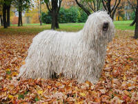

<table border="0" class="layout">
    <colgroup span="1"><col width="15%" span="1"></col><col width="25%" span="1"></col><col width="60%" span="1"></col></colgroup> 
    <tbody>
        <tr>
            <td valign="top">
                <div class="holster">
                    <div class="block_container s3 b-text b-static-text user_css_128160066548" id="e_12777971995">
                        <p><em><strong>Сашилина Мила</strong></em> тел.318-15-69<br /><strong>Заходите к нам в <a href="http://www.komondors.narod.ru/">гости</a></strong></p>
                    </div>
                    <div class="block_container s3 b-image txt-center" id="e_1277727979259"><span></span></div>
                </div>
            </td>
            <td>
                <div class="holster">
                    <div class="block_container s3 b-text b-static-text user_css_12816005438" id="e_128267077156">
                        <p style="text-align: center;"><strong><span style="color: #0000ff;">Комондор</span></strong></p>
                        <p style="text-align: justify;"><span style="color: #0000ff;"><strong><span style="color: #0000ff;">Из истории породы:</span></strong><span style="color: #006600;"><span style="color: #0000ff;"> комондора считают королем среди пород венгерских белых пастушьих собак, вот уже более 10 веков несущих свою службу. По общему мнению, это прямой потомок тех крупных пастушьих собак степных территорий юга современной России, которые, следовательно, являются общим предком и комондора, и нашей южнорусской овчарки. Истории обеих пород тесно связаны и в XX веке: после второй мировой войны желание улучшить состояние породы южнорусская овчарка привело отечественных кинологов к мысли использовать с этой целью комондора. К друзьям своего хозяина комондор относится с теплотой; мощное сложение и решительность характера делают его, однако, опасным противником. Собака почти неуязвима из-за своего уникального шерстного покрова. Вероятно, именно эта особенность экстерьера помогала комондору в борьбе с крупными хищниками - волками и медведями; поскольку собака оставалась со стадом одна на долгое время и вынуждена была научиться быстро принимать самостоятельные решения, в результате сформировался тот развитый интеллект, которым порода славится и по сей день.</span></span></span></p>
                        <p style="text-align: justify;"><span style="color: #0000ff;"><span style="color: #006600;"><span style="color: #0000ff;">&nbsp;</span></span></span><span style="color: #006600;"><br /><span style="color: #0000ff;"><strong>Общая характеристика:</strong> обладает сильным, самостоятельным и смелым характером. Прирождённый защитник, суровый и злобный. Надёжный друг, способный постоять за своего хозяина.</span></span></p>
                        <p style="text-align: justify;"> </p>
                        <p style="text-align: justify;"><br /><span style="color: #0000ff;"><strong>Содержание и уход: </strong>собаке необходимы физические нагрузки и хороший выгул. Шерсть комондора состоит из длинного, волнистого, грубого наружного ворса и короткого густого подшерстка. Именно сочетание этих двух типов ворса и образует шнуры. В середине шнура расположен прямой направляющий волос, вокруг которого обвиваются волнистые живые ворсинки наружного ворса. Эти ворсинки держатся вместе за счет своего волнистого строения и, кроме того, подшерстка. Уход за шерстью становится необходимым, когда шерсть щенка достигает такой длины и плотности, при которой ее нужно разделять, чтобы она не свалялась. Такая необходимость обычно появляется в возрасте от четырех до восьми месяцев, в зависимости от индивидуальных особенностей шерсти, климата, географического местонахождения, окружающей среды и активности собаки. Когда станет заметно, что шерсть начинает сбиваться в комки, тогда следует начинать разделение на ровные полоски. Тщательно тяните за каждую прядь, отделяя ее до самой кожи от других прядей. Такая процедура высвобождает излишки мертвого подшерстка, который потом выпадет. Старайтесь придерживаться естественной структуры шнуров. Вокруг каждого направляющего волоска вы найдете большие или маленькие пучочки собравшегося верхнего ворса. Это позволит вам определить естественный размер шнура. По мере взросления собаки, эти шнуры будут все более выраженными и плотными. Как только шерсть собаки будет разделена на ровные пряди, ее уже будет легко поддерживать в этом состоянии.</span></p>
                        <p style="text-align: justify;"> </p>
                        <span style="color: #006600;">
                            <p><br /><span style="color: #0000ff;"><strong>Размеры:</strong> рост 70-75 см (кобели), 65-70 см (суки). Вес 40-50 кг.</span></p>
                            <p><span style="color: #0000ff;">___________________________________</span></p>
                            <span style="color: #006600;">
                                <p><span style="color: #0000ff;"><a href="http://www.dog.blister.ru/"></a></span></p>
                            </span></span>
                        <p> </p>
                        <p> </p>
                        <p style="text-align: justify;"><span style="color: #006600;">&nbsp;</span></p>
                        <p> </p>
                    </div>
                </div>
            </td>
        </tr>
    </tbody>
</table>​
